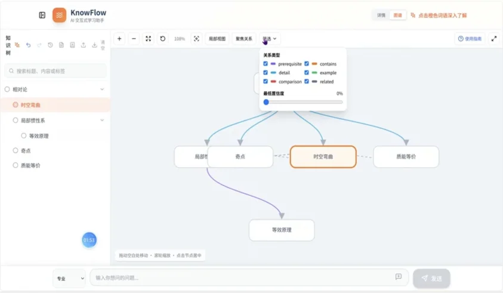

返回软件项目索引
返回软件项目索引S06 / 软件团队 · 文档展示
KnowFlow
KnowFlow 是一款面向跨专业学习者、零基础学习者和陌生领域探索者的 AI 个性化学习工具，旨在降低学习新领域时的信息理解与知识整理成本。
用户可以通过 AI 问答探索陌生知识，选择不同回答深度，从入门解释逐步深入到专业和论文级内容。系统能够从问答和导入的学习材料中自动提取知识点，构建可视化知识树与知识图谱，呈现知识之间的层级结构和横向关联。用户还可以对知识节点进行编辑、移动、合并和搜索，并通过连续追问不断扩展自己的知识体系。
KnowFlow 将 AI 问答、知识探索与知识管理结合起来，让学习过程中的零散信息逐渐形成结构化、可视化、可持续积累的个人知识网络。
